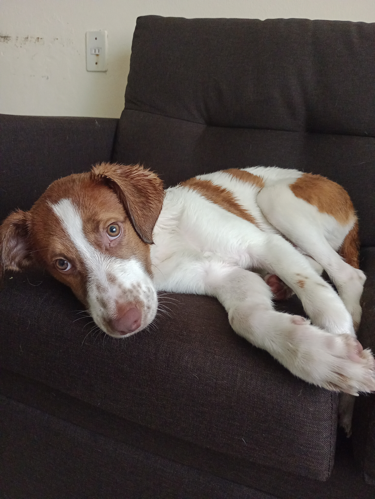
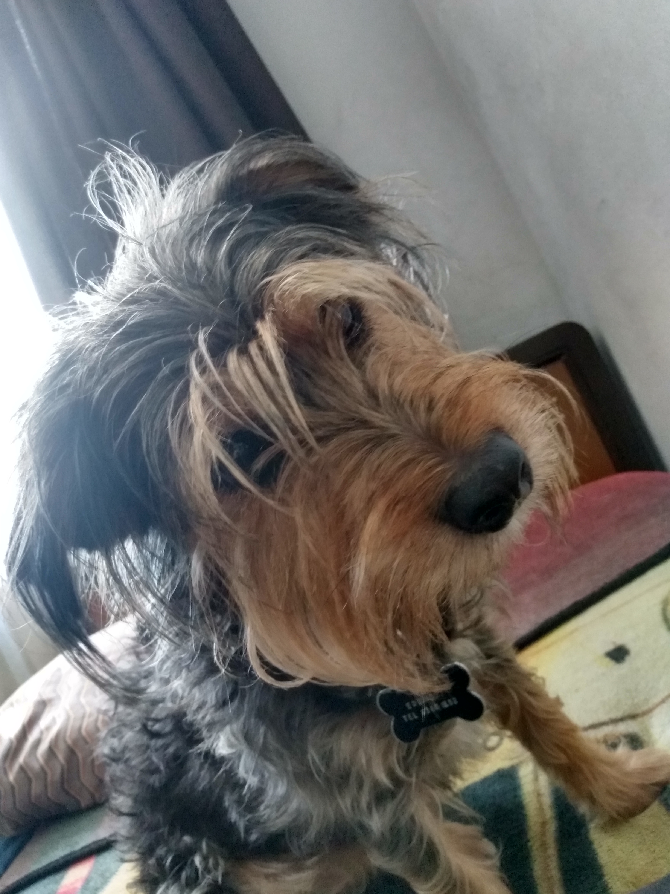

Chamoy encontró su hogar
Adopción realizada en junio de 2025
Chamoy, una gata juguetona y cariñosa, fue adoptada por la familia López. Ahora disfruta de largas caminatas y juegos en el parque con sus nuevos amigos humanos.
Adopción realizada en junio de 2025
Chamoy, una gata juguetona y cariñosa, fue adoptada por la familia López. Ahora disfruta de largas caminatas y juegos en el parque con sus nuevos amigos humanos.

Adoptado en Enero 2026
Thor es un perro enérgico que esperó 6 meses en el refugio...

Adoptado en Abril 2024
Nico, un perro tranquilo y cariñoso, fue adoptado por la familia Martínez. Ahora disfruta de momentos de tranquilidad en su nuevo hogar.

Adoptado en Agosto 2015
Bigotes, un perro juguetón y lleno de energía, fue adoptado por la familia Torres. Disfruta de los paseos y de comer pollo.